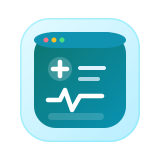

Healthcare Consultation Assistant
AI-powered SaaS that helps clinicians transform consultation notes into visit summaries, next steps, and patient-friendly email drafts.
Redirecting in 3s. If nothing happens, click here.

AI-powered SaaS that helps clinicians transform consultation notes into visit summaries, next steps, and patient-friendly email drafts.
Redirecting in 3s. If nothing happens, click here.